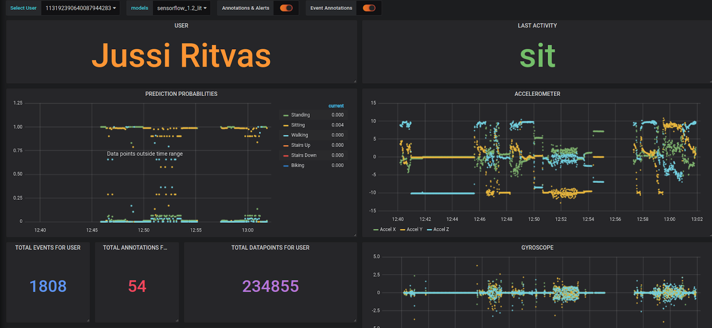
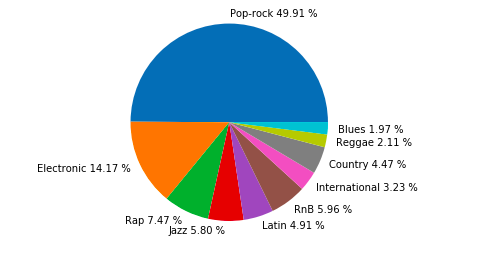
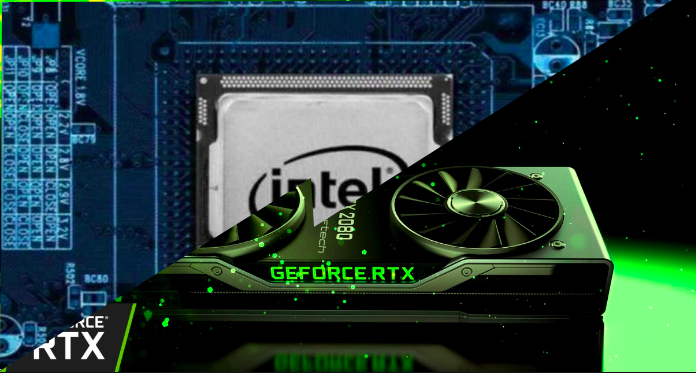

I am a programmer with a thrive to become an expert on optimizing software runtimes. I am fascinated to learn about parallel programming, concurrent programming, as well as distributed algorithms.
My passion for software optimization started on my universitys course in programming parallel computers. Back then I was (and still am) interested on different applications of machine learning, particularly deep learning. On the course we had an exercise on accelerating convolutional neural networks with openMP and cuda. After the assignment was done I knew that this was something I would like to specialize on.
By combining machine learning with software optimization, I would like to tinker with small computers such as Nvidias Jetson Nano, Googles edge TPU and raspberry Pi 4.
I was an assistant on my universitys course "Programming Studio 1: Media Programming". In my job I graded students work and held assignment advisory sessions.
Major: Computer Science
Minor: Data Science
Bachelor's thesis topic: Wait-Free Data Structures
Programming languages:
Frameworks/Platforms:


